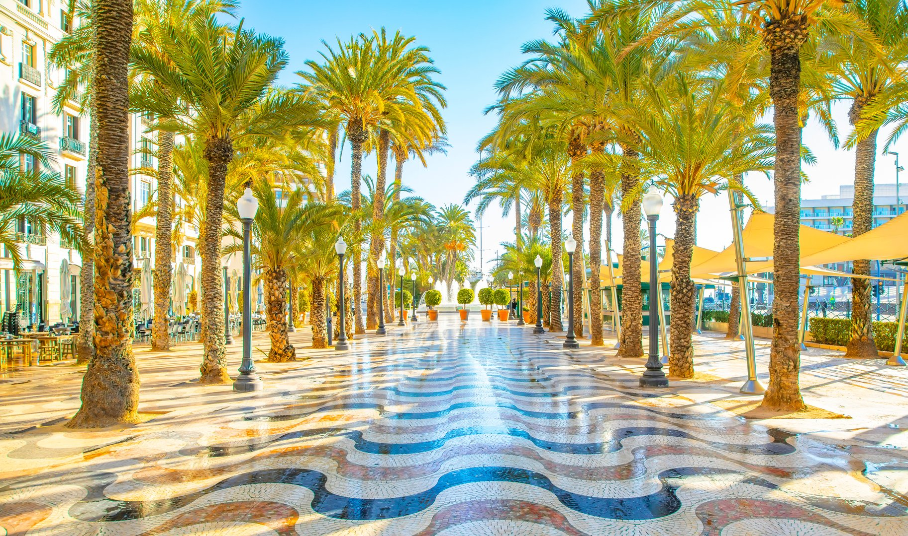
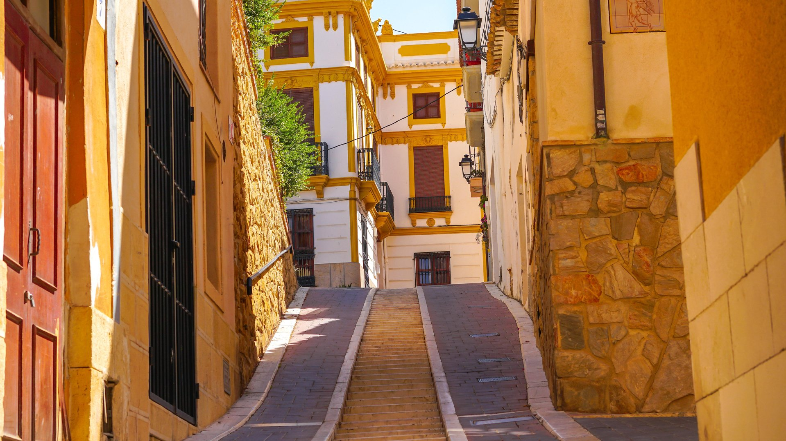
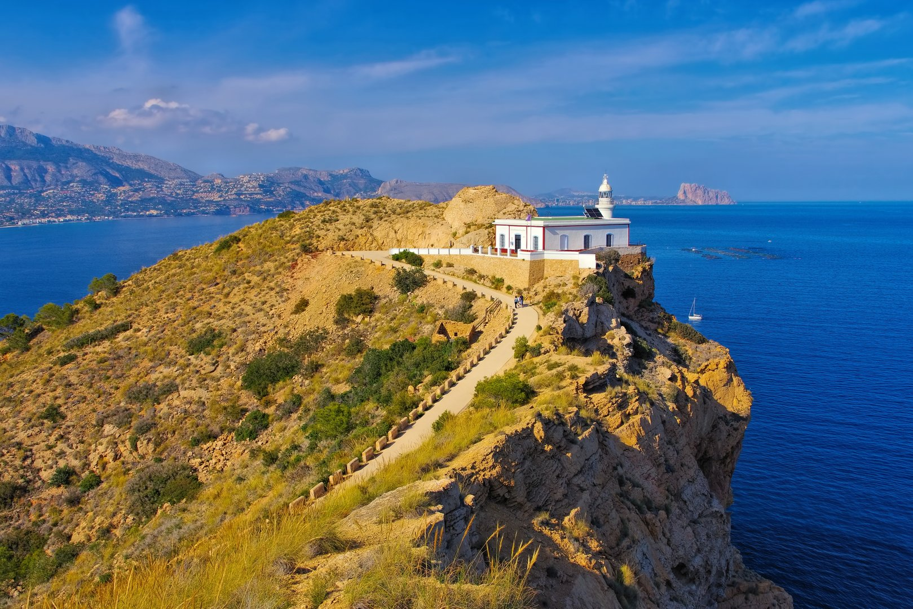

Benidorm
Het levendige hart van de Costa Blanca. Van prachtige stranden tot een bruisend nachtleven. Perfect voor een dagje vol energie en plezier.
15 min rijden
Van bergdorpjes tot kristalheldere baaien. Ontdek waarom we zo van deze regio houden en waarom je je hier direct thuis zult voelen.
Stap de deur uit van Casa Mi Sueño en het avontuur begint. We prijzen ons gelukkig met een van de mooiste plekjes aan de Costa Blanca – een thuis tussen de bergen en de zee, waar elke dag nieuwe ontdekkingen brengt.
Sinds we hier een deel van het jaar wonen, hebben we de echte pareltjes ontdekt. Dat koffietentje waar de eigenaar zijn eigen olijven perst. De bakker die nog brood bakt zoals zijn grootvader het hem leerde. De vissersvrouw die elke dinsdag haar zelfgemaakte conserven verkoopt op het pleintje achter de kerk. Juist deze ontmoetingen en ervaringen maken een verblijf aan de Costa Blanca zoveel meer dan een gewone vakantie.
"Waar zee, bergen en het goede leven samenkomen"
L'Alfàs del Pi heeft een rijke geschiedenis die teruggaat tot de Moorse periode. De naam 'Alfàs' komt van het Arabische 'al-fahs', wat 'de vlakte' betekent. Het dorp ontwikkelde zich rond een oude Moorse toren die nog steeds te zien is in het centrum.
Het 'Pi' in de naam verwijst naar de dennenboom die in het dorpswapen staat. Deze symboliseert de weelderige dennenbossen die het gebied ooit bedekten. Vandaag de dag zijn deze bossen nog steeds een belangrijk onderdeel van het landschap.
Van oorsprong was L'Alfàs een klein vissersdorp. In de jaren '60 begon de ontwikkeling als toeristische bestemming, met behoud van zijn authentieke karakter. Vandaag de dag is het een levendige gemeente waar Spaanse tradities en internationale invloeden harmonieus samengaan.
Het historische centrum van L'Alfàs del Pi is een doolhof van smalle straatjes en witte huizen, waar de tijd stil lijkt te staan. Bezoek de Iglesia de San José, gebouwd in de 18e eeuw, of wandel door de oude Moorse wijk waar de sfeer van vervlogen tijden nog steeds voelbaar is.

Flaneer over de Explanada de España.

Verdwaal in de charmante Casco Antiguo.

Een verfrissende duik in de natuur.

Adembenemend uitzicht vanaf de vuurtoren.
Op slechts 10 minuten rijden voel je het zand tussen je tenen op het mooie strand van Albir. De kristalheldere baaien van de Costa Blanca liggen letterlijk om de hoek - van het levendige Benidorm tot de verscholen cala's die vooral bekend zijn bij de lokale bevolking.
L'Alfàs del Pi ademt nog die authentieke Spaanse sfeer die steeds zeldzamer wordt. Smalle straatjes met geurende jasmijn, pleintjes waar de inwoners hun avondkoffie drinken, en die heerlijke rust die zo kenmerkend is voor het echte Spanje.
Binnen een uur rijden vind je bergdorpjes waar de tijd heeft stilgestaan, steden vol geschiedenis en natuurparken die je adem wegzullen nemen. Elke dag biedt een nieuw avontuur – of je nu houdt van cultuur, natuur of gewoon genieten van het goede leven.
Carrer de les Petúnies 16, 03580 L'Alfàs del Pi, Alicante
Van ontspannen strandmomenten tot spannende bergwandelingen – de perfecte uitvalsbasis voor jouw ideale vakantie.
Bekijk beschikbaarheid & reserveer